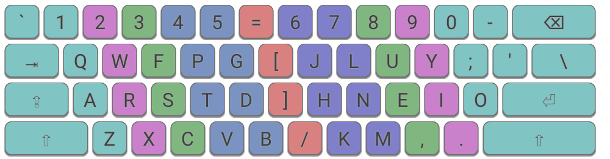
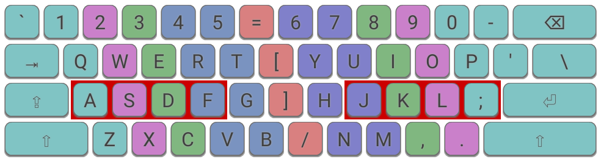
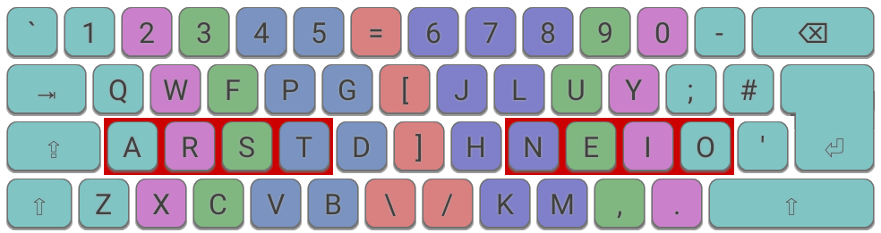
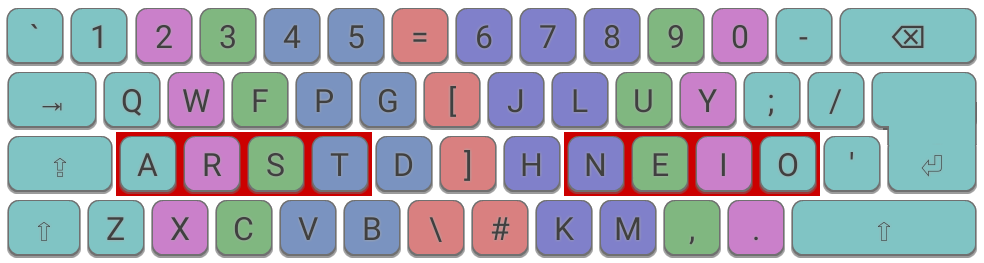

The Wide Mod introduces greater separation between the left and right hands by moving all keys on the right-hand side of the keyboard one space to right. The distance between the home positions of your left and right hands is slightly increased, which most users should find more comfortable. For this to work, some bracket/symbols keys are relocated to centre of the keyboard.

The Wide Mod on an Colemak ANSI keyboard.
The benefits of this mod are:
- Helps you achieve a more comfortable posture. Reduces the tendency to be "hunched over" the keyboard due to the compact nature of most keyboards.
- Easier to reach commonplace keys on the far right-hand side, such as Backspace/Delete and Return/Enter.
- Reduced usage of weak, right pinky finger.
- The Right Alt (or AltGr) key also becomes even easier to use as right-thumb modifier key. If you are not already using this key for accented characters/symbols, you may want to consider bringing it into use for some other useful purpose.
The Wide Mod introduces a modest improvement to ergonomics for a low learning cost. It can also be very effectively combined with the Angle Mod, see below for examples.
It's worth mentioning many of the benefits of the Wide Mod can be achieved by using a split keyboard.

The Wide Mod on an Qwerty ANSI keyboard.
The Wide and Angle Mods can be combined:

The Wide + Angle Mods on an Colemak ISO keyboard.

The Wide + Angle Mods with alternative slash position an Colemak ISO keyboard.